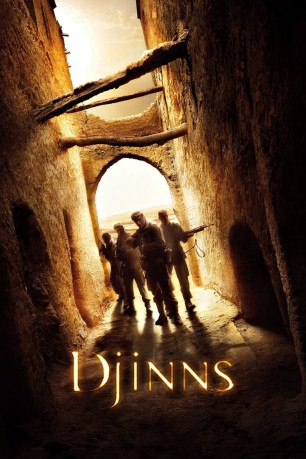

#10667 Djinn - Dämonen der Wüste
Alternativ: Stranded (Englischer Titel)
 
 IMDB-Wertung: 5.1 / 10
IMDB-Wertung: 5.1 / 10  Metascore: 0
Metascore: 0 
Während einer Rettungsmission geraten Soldaten in die Arme von algerischen Rebellen. Geschwächt können sie in eine Zitadelle flüchten, die zunächst Schutz verspricht. Doch noch wissen die Soldaten nicht, dass eine unsichtbare Gefahr ihren Spuren folgt, die von Mauern nicht aufgehalten werden kann.
Jahr: 2010
Dauer: 103 Minuten
FSK: 16
Land: Frankreich Studio: SquareOne EntertainmentTonspuren:
Untertitel:
Auflösung: 1080p (1920x816) Größe: 4823 MB
Genre: Horror, Mystery
Regisseur: Hugues Martin, Sandra Martin
Drehbuch: Sandra Martin, Hugues Martin
Soundtrack: Siegfried Canto
Darsteller:
- Grégoire Leprince-Ringuet als Michel
 Thierry Frémont als Vacard
Thierry Frémont als Vacard Saïd Taghmaoui als Aroui
Saïd Taghmaoui als Aroui Aurélien Wiik als Saria
Aurélien Wiik als Saria Cyril Raffaelli als Louvier
Cyril Raffaelli als Louvier- Matthias Van Khache als Malovitch
 Stéphane Debac als Durieux
Stéphane Debac als Durieux- Emmanuel Bonami als Ballant
- Nicolas Carpentier als Homme Services Internes 1
- Alexandre Ottoveggio als Soldat français
- Grégory Quidel als Max
- Omar Lotfi als Kamel
- Zakaria Lahouissi als Ali
- Raouia als Daouïa
- Damien Leveque als Rémy
- Yann Hernandez als Lucas
- Jawad Alami als Mustapha
- Abdelaziz Boujaada als Samir
- Karim Saidi als Nacer
- Sarah Elborj als Femme Max
- Stéphan Wojtowicz als Le colonel
- Franck Mercadal als Le commandant
- Pierre Troestler als Pilote de l'avion
- Jean-François Auguste als Co-pilote
- Richard Chevallier als Général Blanchard
- Bertrand Constant als Homme Services Internes 2
- Brice Coupey als Le djinn
Datei: X:\NEU\Djinn - Dämonen der Wüste (2010, FSK16, 1920x816).mkv seit 16.02.2019
 Es gibt insgesamt 187 Filme in der Gruppe 'NEU'
Es gibt insgesamt 187 Filme in der Gruppe 'NEU'